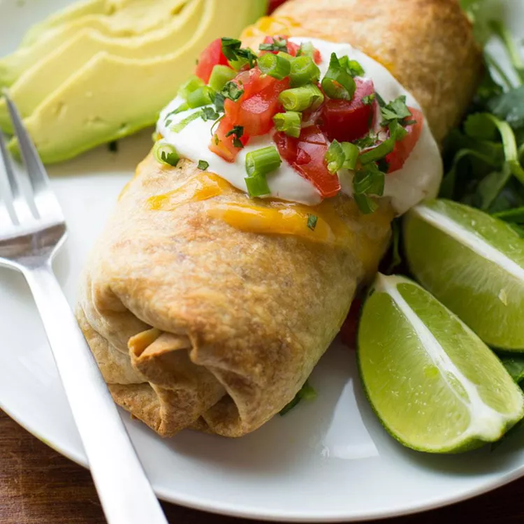

Baked Chicken Chimichangas

Description
TFor this baked chicken chimichanga recipe, I think you're going to love this tasty, lighter version of a restaurant classic! We'll definitely be adding these to our meal rotation — once you try them, I think you will too!
Ingredients
- 1 ½ cups cooked shredded chicken
- ⅔ cup salsa
- 1 ½ teaspoons ground cumin
- 1 teaspoon dried oregano
- 1 (5.6 ounce) package Knorr® Fiesta Sides™ - Spanish Rice
1 ¼ cups shredded Colby-Jack cheese
- 4 (10 inch) burrito-size flour tortillas
- 1 tablespoon canola oil
Instructions
- Preheat the oven to 425 degrees F (220 degrees C). Line a baking sheet with parchment paper.
- Combine shredded chicken with salsa, cumin, and oregano in a large bowl.
- Prepare Spanish rice according to package directions. Remove from the heat.
- Stir rice and shredded cheese into chicken mixture. Divide mixture among flour tortillas; wrap and place seam-side down on a lined baking sheet. Brush with oil.
- Bake in preheated oven until golden brown and crispy, about 20 minutes. Serve, if desired, with your favorite toppings.